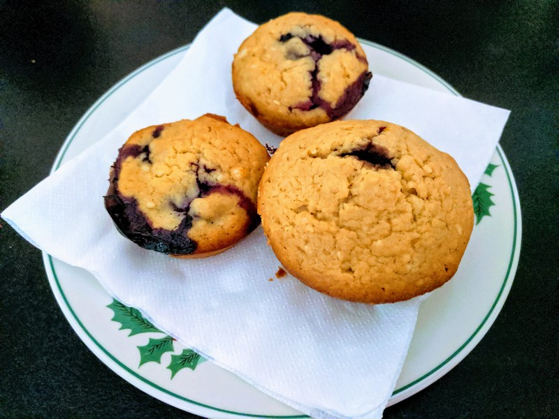

Minulý týden jsme měli takový malý “baby” slučák a zcela neplánovaně se mi na něj podařilo dokonce i napéct, když O. nečekaně usnul po cestě ze cvičeníčka. Sedla jsem hned ke Googlu s myšlenkou na pixlu borůvek, co jsem cestou koupila, a vyskočil na mě recept na borůvkové muffiny podle Kitchenette. A protože byly vážně famózní, tady máte recept.
- 1 velké šťastné vejce
- 1 hrnek podmáslí (použila jsem náš domácí kefír)
- 125 g másla, rozpuštěného a vychladlého
- Vanilka (špetka mleté vanilky, kousek z lusku, nebo vanilkový extrakt)
- 3/4 hrnku třtinového cukru
- kůra z jednoho bio citrónu (4 lžičky)
- 1 hrnek hladké mouky (pšeničné nebo špaldové)
- 1 hrnek pšeničné nebo špaldové celozrnné mouky (neměla jsem, použila jsem obyč)
- 2 lžičky prášku do pečiva
- 3 lžíce semínek (drcená lněná, sezamová, slunečnicová, dýňová, ..)
- 3/4 lžičky mořské soli
- 150 g borůvek
Předehřejeme si troubu na 175°C (horní a dolní ohřev) a připravíme si vymazanou formu na 12 muffinů. Ve střední míse smícháme vejce, kefír, rozpuštěné máslo, vanilku, citrónovou kůru, semínka a cukr. Ve druhé míse připravíme směs mouky, prášku do pečiva, soli. Tuto moučnou směs přidáme do kefírové, nasypeme na vrch borůvky a pomocí vařečky lehce a krátce promícháme. Naplníme formičky a pečeme, dokud lehce nezezlátnou na povrchu, přibližně 30 minut. Otestujeme špejlí, píchnutím do středu muffinu - špejle musí vyjít čistá.

A teď jsem na ně dostala hroznou chuť :-)